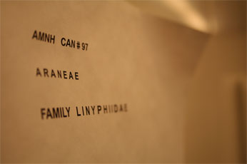

In 2002,
Lorenzo Prendini was hired to curate the Arachnid (non-spider) and Myriapod Collections in the
Division of Invertebrate Zoology at the AMNH. The following arachnid orders fall
under his jurisdiction: Acari (mites and ticks), Amblypygi (whip spiders), Opiliones (harvestmen), Palpigradi (palpigrades), Pseudoscorpiones (false scorpions), Schizomida (schizomids), Scorpiones (scorpions), Solifugae (solifuges, solpugids or camel-spiders), Uropygi (vinegaroons or whip scorpions). Upon the retirement of Norman I. Platnick in 2014, Prendini assumed responsibility for the Araneae (spiders) and Ricinulei (hooded tick-spiders or ricinuleids). Queries regarding visits, loan requests, and/or specimen donations concerning any of these groups should be addressed to him.

In addition, Prendini is in charge of the myriapod orders Chilopoda (centipedes), Diplopoda (millipedes), Pauropoda (pauropods),
and Symphyla (garden centipedes or symphylans). Pio Colmenares, Museum Specialist, is responsible for management of the Arachnid (non-Araneae) and Myriapod Collections, and for processing loan requests.
Due to Lou Sorkin�s retirement, all loan requests directed to the Spider and Ricinuleid Collections may suffer significant delays. More information
about the personnel in Prendini's research group can be found under the
People section.
Incoming and outgoing loans of specimens from the Arachnid and Myriapod Collections are a weekly occurrence,
while visits to the collections occur less frequently, averaging once a month. Queries regarding visits, loan requests, specimen
donations, and the preservation of tissue samples for molecular analysis should be addressed
to
Lorenzo Prendini. Anyone interested in the particular protocols used for the preservation
and management of the AMNH Arachnid and Myriapod Collections should contact
Pio Colmenares.
Donors should refer to the Division of Invertebrate
Zoology
instructions for depositing material. Those interested
in management of natural history collections should consult the website for the
Society for the
Preservation of Natural History Collections (SPNHC).